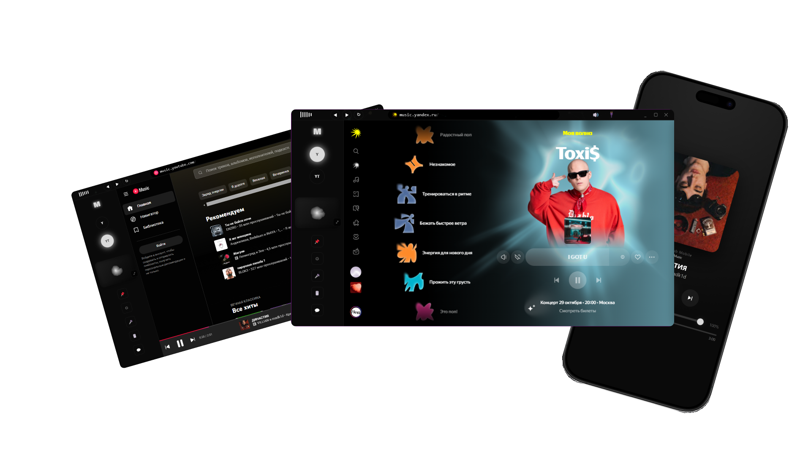
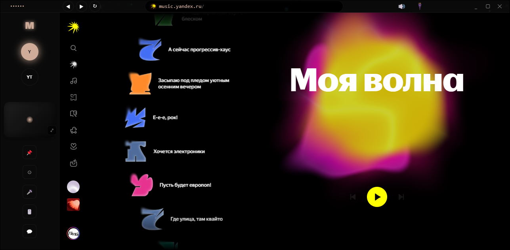
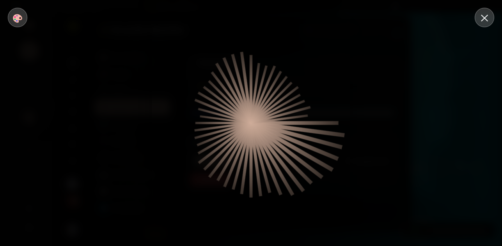
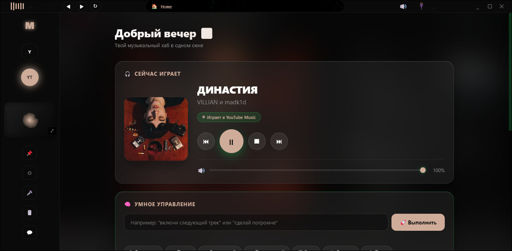
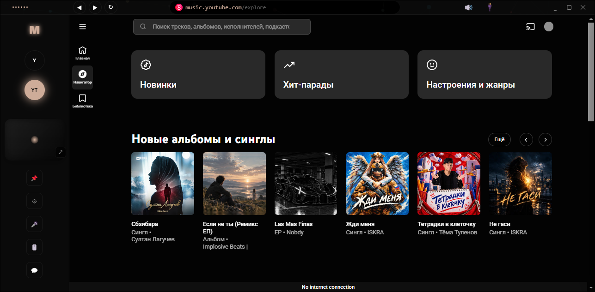

Объединяй Яндекс Музыку, YouTube, VK и SoundCloud. Наслаждайся живыми визуализациями и умным AI-помощником.

Переключайся между Яндекс.Музыкой, YouTube Music, SoundCloud и VK в один клик. До 2 сервисов одновременно.
Реагируют на твою музыку в реальном времени. От классических полосок до галактик и северного сияния.
Пиши "включи следующий" или "найди Shape of You". Нейросеть управляет плеером и ищет треки.
Магазин плагинов, кастомные сайты, смена темы, эффекты кнопок и настройка каждой детали.




Скачай MusicHub прямо сейчас. Это бесплатно.
⬇️ Скачать MusicHub для WindowsПоддерживается Windows 10 / 11 (64-bit)